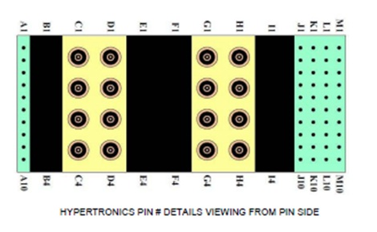

- 00000018WIA308ADF20GYZ
- id_131072393.0
- Aug 29, 2019 1:55:39 AM
1.5T Express Coil: 16E Head Neck Array Troubleshooting
| Required persons | Preliminary requirements | Procedure | Finalization |
|---|---|---|---|
| 1 | 0 minutes | 30 minutes | 0 minutes |
| Item | Quantity | Effectivity | Part number | Manufacturer |
|---|---|---|---|---|
| Digital Multi-meter | 1 | - |
N/A | - |
| TL UNIFIED PHANTOM | 1 | - |
5343347 | - |
| LARGE CYLINDRICAL UNIFIED PHANTOM | 1 | - |
5342679 | - |
| HNS Phantom Positioner | 1 | - |
5344844 | - |
| Item | Quantity | Effectivity | Part number | Manufacturer |
|---|---|---|---|---|
| Some tests may require FRUs for diagnosis. | - | - | - | - |
| Condition | Reference | Effectivity |
|---|---|---|
|
The following coil configurations must be installed to run the MCQA test for the coil: Brain Array, NV Array, Cspine Array, Cspine_Adapter, CTspine_Adapter, CTspine Array | - | - |
The following tips can be used to troubleshoot common problems with the 16E Head Neck Array Coil troubleshooting.
Receiving No Signal
-
Problem: You are unable to pre-scan or are scanning, yet receiving no signal, and receiving part of signal from coil elements.
-
Possible Solution: Refer to the following steps.
- Verify the green light above the port Port B is illuminated. This indicates the coil is properly plugged into the system and the coil I.D. on the coil is properly installed.
- Verify that the system has correctly detected the coil by checking
in the “Currently Connected” in the GUI to select coils
in Rx as shown in Illustration 1.
Figure 1. Currently Connected Coils Window In The Scan Screen 
- Ensure the anterior or adaptor block is fully latched.
- Verify that the coil is positioned with the cable exiting towards the bore.
- Verify that the landmark is correct and that the cradle has not unlatched.
- Verify that the scan locations and any FOV offsets are correct.
If you still cannot get a signal, try to scan (transmit and receive) with the body coil. For this test, be sure to remove the imaging coil from the magnet bore before you scan with the body coil. If you still receive no signal the problem probably lies with the MR system. If the scan completes successfully, there is probably a problem with the Head Neck Array coil. Contact GE for further assistance. If you are unable to scan with the substitute coil, there may be a system problem related to this particular coil type.
Image Quality
-
Problem: Poor IQ, shaded images, or if MCQA fails
-
Possible Solution: Refer to the following steps.
- Perform a continuity check on the output cable (Output Cable Check). The continuity check must be performed by a GE authorized Service Engineer.
- Verify that there are no loops in the cables.
- Verify that there are no metal or ferromagnetic objects close to the coil, patient or magnet (i.e., safety pin, hair pin).
- Verify that the coil is properly positioned.
- Verify that your center frequency is within the frequency adjustment range for your system.
- Verify that the R1, R2 and TG values from the pre-scan are within
normally expected ranges.
If you have not done so already, perform a system Quality Assurance MCQA test. If the values you obtain do not fall within normal operating parameters, investigate this further by performing a phantom scan with the body coil. For this test, be sure to remove the imaging coil from the magnet bore before you scan with the body coil. If you still have the same problems, there is probably an MR system problem. If the body coil scan is satisfactory, acquire a scan using both another coil of the same type (receive-only, phased array or transmit/receive, whichever applies) and the same system coil selection. If the image quality is visibly improved, there may be a problem with the Head Neck Array coil. Contact GE for further assistance. If the image quality still suffers, there may be a system problem related to imaging with this type of coil.
Artifacts
-
Problem: There is a black line, strip lines, or signal void on the image.
-
Possible Solution: Refer to the following steps.
- Verify that there is no metal present in the area being scanned in or on the patient.
- Verify that no hair is caught trapped in the connectors between the anterior and posterior sections of the Head Neck unit. This may appear as intermittent oscillations.
- If you have oscillation of the preamp you will see striped lines. Connect the Head Neck Anterior again to Head Neck Posterior Coil.
Output Cable Check
Visual check
- Before removing the cable assembly from the coil, visually inspect all coaxial connectors and DC pins on the coil connector. Figure 2 shows the pin layouts of the coil connector. If there are any broken, deformed or recessed pins or coaxial connectors, replace the cable assembly. Remove the cable assembly from the coil. The connector of the 16E Head Neck Array Coil has 2 DC pins in column A, 2 DC Pins Column J and 8 DC pins in column M, 4 RF coaxial connectors columns C , 4 RF coaxial connectors in columns D, 4 RF coaxial connectors columns G and 4 RF coaxial connectors in columns H If there are any broken, deformed or recessed pins or coaxial connectors, replace the cable assembly.
- Visually inspect to ensure the availability of 16 RF coaxial Connectors and 12 DC Pin are available without any damage in Cable Receptacle Connector.
- If there is any damage to any of the RF Center Pins or DC Pins. Remove the cable assembly from the coil. See Head Neck Array Cable Replacement.
- If there is no damage to Cable assy proceed to Continuity Check for Head Neck Array System Cable Assy.
Continuity Check for Head Neck Array System Cable Assy
The 16E Head Neck Array coil has Port B Receptacle that is connected to Port B of MR System.

- Note:The following procedure will rule out a short to GND for each of the signal pins detailed in the following table and ensure the integrity of the ground connection for each RF coax cable. This check does not determine continuity for each of the RF signal connections. With the coil cable disconnected, use a multimeter to assure no open circuit condition exists between the RF ground shields of the RF coax connector in the system side and the coils side (Refer to Table 5 ) Use the multimeter to assure an open circuit condition exists between the center pin of the coil side coax connectors and the shield for each RF connector in the coil side.
The center pins of the System Connector receive coaxial connectors are extremely fragile. Do not attempt to make any measurements at these center pins.
Table 5. 16 Ch “B” connector RF Allocation System Side Connector RF GND Shield Coil Side Connector RF Center Pin C1 CH9 (White) C2 CH10 (White/Black) C3 CH13 (Yellow) C4 CH14 (Black) D1 CH15 (White/Brown) D2 CH16 (Blue) D3 CH11 (Grey) D4 CH12 (Brown) G1 CH6 (Red) G2 CH3 (Orange) G3 CH4 (White/Yellow) G4 CH5 (Green) H1 CH1 (White/orange) H2 CH8 (Clear) H3 CH2 (White/Red) H4 CH7 (Purple) - If one or more of the readings indicate a short, replace the cable. If all of the above readings indicate an open circuit condition, proceed to the DC Lines Continuity Check.
- DC Lines Continuity Check
With the coil cable disconnected, use a multimeter to determine continuity between the designated pins for each control line below. Also test the continuity between the pairs of pins within system connector that are listed in the table 2 below. If any line or pair of pins indicates an open, replace the output cable.
Table 6. “B” connector DC Allocation System Side Connector DC Pin Coil Side Connector DC Center Pin Signal Short A1 to A2 N/A coil present Short J9 to J10 N/A body transmit enable M2 J7 Pin 1 (Yellow) +10 to +15Vdc (auxiliary power, not regulated) M3 J3 Pin 1 (Red) +10Vdc (preamp power) M5 J7 Pin 2 (Blue) Return for +10 to +15Vdc aux power M6 J3 Pin 2 (Black) Return for +10Vdc preamp power M7 J9 Pin 2 (Grey) coil ID M8 J9 Pin 1 (White) coil ID return M9 J9 Pin 4 (Brown) coil present M10 J9 Pin 3 (Green) Coil present rtn.
Coil ID Check
-
Problem: Head Neck Array Coil not recognized to MR System.
-
Possible Solution: Refer to the following steps.
- Verifies the Pins M7, M8, M9 and M10 are not damaged. Replace the Head Neck Array Coil Cable Assy if Pins are damaged. FollowHead Neck Array Cable Replacement Procedure to replace Cable assy.
- If the Pins are ok, replace the Coil ID as per HNA Coil ID Replacement Procedure .
- Connect the Head Neck Array Coil to MR System and the System should recognize the coil
Finalization
No finalization steps.